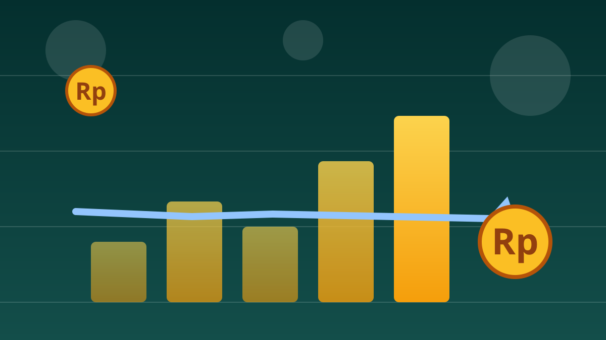

1 / 7

💰 EKONOMI
Saham RI "dibekukan" lagi?
Prediksi panas: November ini MSCI bakal freeze saham Indonesia untuk ketiga kalinya. Geser buat tau kenapa 👉
2 / 7
🔮
Prediksinya: freeze jilid 3
Head of Research Kiwoom Sekuritas Indonesia, Liza Camelia Suryanata, bilang MSCI kemungkinan besar mempertahankan status freeze pada review November 2026. Kalau kejadian, ini pembekuan ketiga berturut-turut sejak Januari 2026.
Hasilnya diumumkan 11 November 2026 dan berlaku efektif 1 Desember 2026. Tandai kalender lo.
3 / 7
🕵️
Akar masalahnya: free float
MSCI ragu sama data free float — saham yang beneran bisa dibeli publik. Kasus utamanya BREN dan DSSA: menurut data BEI, kepemilikan sahamnya terkonsentrasi banget — DSSA 95,76% dan BREN 97,31% di tangan segelintir pihak.
Artinya, saham yang beneran beredar bebas jauh lebih kecil dari angka yang tercatat. Red flag buat investor global.
4 / 7
📉
Drama GOTO, plot twist-nya di sini
Nah, GOTO beda cerita: free float-nya di atas 70%, aman. Tapi harganya malah nangkring di bawah Rp50, bikin banyak investor institusi nyangkut. Menurut Liza, ini bikin MSCI makin hati-hati.
Senior Market Analyst Mirae Asset Sekuritas, Nafan Aji Gusta, nambahin: freeze yang lanjut bisa jadi "overhang negatif" — investor asing bakal makin males masuk ke Indonesia.
5 / 7
🌤️
Tapi ada kabar baiknya juga
Di sisi lain, FTSE Russell memutuskan mempertahankan status Indonesia sebagai Secondary Emerging Market dan nggak memasukkannya ke daftar pantauan penurunan status. Regulator juga udah gerak: batas minimum free float dinaikkan jadi 15% dan keterbukaan kepemilikan saham diperketat.
OJK lewat Kepala Eksekutif Pengawas Pasar Modal Hasan Fawzi bilang pihaknya menghormati independensi tiap penyedia indeks. Artinya, PR-nya sekarang: bukti, bukan janji.
6 / 7
💬
Kata netizen
Di thread @dayoneinvesting.id (Threads, 6 Oktober 2026), seorang investor ritel nyeletuk: "Sekarang gak peduli msci,,, mau freeze terus jg gam masalah,,, jangan jadikan acuan". Admin thread-nya nimbrung: "Menurut konsensus market, base case-nya adalah freeze diperpanjang" — tapi ngingetin, "Hati-hati…, ntar nyangkut disitu lho." (Suara netizen — bukan fakta.)
7 / 7
🤔
Efeknya ke lo apa?
IHSG udah merosot sekitar 30% sepanjang 2026, dan selama freeze jalan, saham Indonesia baru nggak bisa masuk indeks global — artinya dana asing besar belum balik. Kalau lo nabung di reksa dana saham atau baru belajar main saham, siap-siap portofolio lo masih goyang-goyang sampai akhir tahun.
Sisi positifnya: banyak saham bagus lagi diskon. Pelajarannya: jangan FOMO sama hype indeks, pilih saham yang fundamentalnya kuat, dan nabung rutin dikit-dikit itu lebih valid daripada all-in pas lagi rame. 📚